<!DOCTYPE html>
<html>

<head><meta name="generator" content="Hexo 3.8.0">
  <meta charset="utf-8">
  
  <title>最近のこと（遠征とか） | ほしよみ大学生のブログ</title>
  <meta name="viewport" content="width=device-width">
  <meta name="description" content="あいさつこんにちは．10月には赤道儀を破壊し，11月には鏡筒を破壊し散々な2020年後半でしたが，捨てる神あらば拾う神あり．いくつか良いことがありました．">
<meta name="keywords" content="機材,赤道儀,遠征記,その他">
<meta property="og:type" content="article">
<meta property="og:title" content="最近のこと（遠征とか）">
<meta property="og:url" content="http://dabokun.github.io/2020/12/24/00000044-2020-12-recent/index.html">
<meta property="og:site_name" content="ほしよみ大学生のブログ">
<meta property="og:description" content="あいさつこんにちは．10月には赤道儀を破壊し，11月には鏡筒を破壊し散々な2020年後半でしたが，捨てる神あらば拾う神あり．いくつか良いことがありました．">
<meta property="og:locale" content="ja">
<meta property="og:image" content="http://dabokun.github.io/2020/12/24/00000044-2020-12-recent/card.jpg">
<meta property="og:updated_time" content="2021-06-07T17:23:19.234Z">
<meta name="twitter:card" content="summary_large_image">
<meta name="twitter:title" content="最近のこと（遠征とか）">
<meta name="twitter:description" content="あいさつこんにちは．10月には赤道儀を破壊し，11月には鏡筒を破壊し散々な2020年後半でしたが，捨てる神あらば拾う神あり．いくつか良いことがありました．">
<meta name="twitter:image" content="http://dabokun.github.io/2020/12/24/00000044-2020-12-recent/card.jpg">
<meta name="twitter:creator" content="@dabo_pic">
  
  <link rel="alternative" href="/atom.xml" title="ほしよみ大学生のブログ" type="application/atom+xml">
  
  
  <link rel="icon" href="/images/favicon.png">
  
  <link rel="stylesheet" href="/css/style.css">
  <!--[if lt IE 9]><script src="//html5shiv.googlecode.com/svn/trunk/html5.js"></script><![endif]-->
  
</head></html>
<body>
  <div id="container">
    <div class="mobile-nav-panel">
	<i class="icon-reorder icon-large"></i>
</div>
<header id="header">
	<h1 class="blog-title">
		<a href="/">ほしよみ大学生のブログ</a>
	</h1>
	<nav class="nav">
		<ul>
			<li><a href="/">Home</a></li><li><a href="/categories">Categories</a></li><li><a href="/tags">Tags</a></li><li><a href="/archives">Archives</a></li><li><a href="/about">About</a></li><li><a href="/work">Work</a></li>
			<li><a id="nav-search-btn" class="nav-icon" title="Search"></a></li>
			<li><a href="https://github.com/dabokun"></a>
			</li>
			<li><a href="https://twitter.com/dabo_pic"></a></li>
			<li><a href="/atom.xml" id="nav-rss-link" class="nav-icon" title="RSS Feed"></a>
			</li>
		</ul>
	</nav>
	<div id="search-form-wrap">
		<form action="//google.com/search" method="get" accept-charset="UTF-8" class="search-form"><input type="search" name="q" class="search-form-input" placeholder="Search"><button type="submit" class="search-form-submit">&#xF002;</button><input type="hidden" name="sitesearch" value="http://dabokun.github.io"></form>
	</div>
</header>
    <div id="main">
      <article id="post-00000044-2020-12-recent" class="post">
	<footer class="entry-meta-header">
		<span class="meta-elements date">
			<a href="/2020/12/24/00000044-2020-12-recent/" class="article-date">
  <time datetime="2020-12-24T10:46:37.000Z" itemprop="datePublished">2020-12-24</time>
</a>
		</span>
		<span class="meta-elements author">astr0dab0</span>
		<div class="commentscount">
			
			<a href="http://dabokun.github.io/2020/12/24/00000044-2020-12-recent/#disqus_thread" class="article-comment-link">Comments</a>
			
		</div>
	</footer>
	
	<header class="entry-header">
		
  
    <h1 class="article-title entry-title" itemprop="name">
      最近のこと（遠征とか）
    </h1>
  

	</header>
	<div class="entry-content">
		
		
		<div id="toc" class="toc-article">
			<p class="toc-title">目次</p>
			<ol class="toc"><li class="toc-item toc-level-3"><a class="toc-link" href="#あいさつ"><span class="toc-number">1.</span> <span class="toc-text">あいさつ</span></a></li><li class="toc-item toc-level-3"><a class="toc-link" href="#最近のことなど"><span class="toc-number">2.</span> <span class="toc-text">最近のことなど</span></a></li><li class="toc-item toc-level-3"><a class="toc-link" href="#遠征記とか"><span class="toc-number">3.</span> <span class="toc-text">遠征記とか</span></a></li></ol>
		</div>
		
		<h3 id="あいさつ"><a href="#あいさつ" class="headerlink" title="あいさつ"></a>あいさつ</h3><p>こんにちは．<a href="/2020/10/29/00000039-2020-10/">10月には赤道儀を破壊</a>し，<a href="/2020/12/01/00000042-clean-failure-maaya-alt/">11月には鏡筒を破壊</a>し散々な2020年後半でしたが，捨てる神あらば拾う神あり．いくつか良いことがありました．</p>
<a id="more"></a>
<h3 id="最近のことなど"><a href="#最近のことなど" class="headerlink" title="最近のことなど"></a>最近のことなど</h3><p>まず，EM-11が帰ってきました．うれしい．</p>
<p>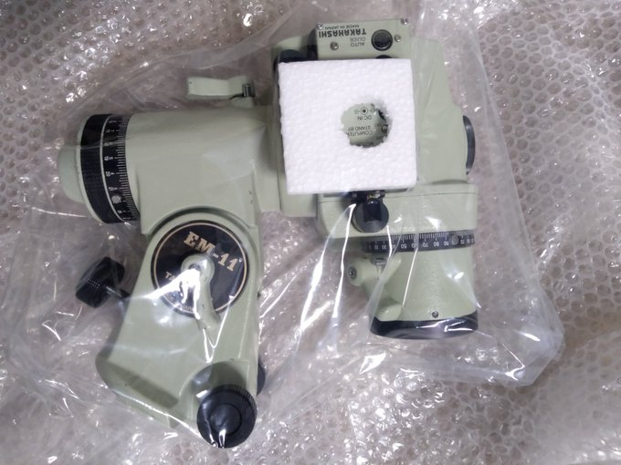</p>
<p>破壊したときに押し込まれた基盤の修理と，一緒に送っていたリモコンの接触不良があったのでそれも一緒に直していただきました．なんだかんだでリモコンも鋳物でできていて重いですから，扱いには注意しないとなりませんね（おそらくケーブルを掴むことが多かったのが接触不良の原因かと）．費用は合計一万円しない程度でした．これくらいで信頼をおいている機材が戻ってくるならお安いものです．</p>
<p>それから，（話は変わります）学振には無事落っこった私ですが，学内で申請していたいい感じの給付型奨学金が通ったので，いくつか周辺機器を買い足しました．</p>
<p>まずはキーボード</p>
<p>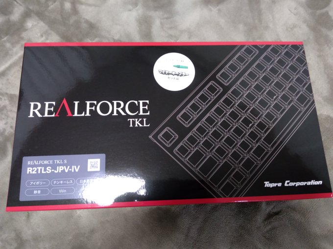</p>
<p>東プレ Realforce TKL S R2TLS-JPV-IV-KP です．ヨドバシで使用感を確かめて一番気に入ったものにしました．カチャカチャうるさいのはちょっと…と思ったのでスコスコいう静音タイプのものです．変荷重でタイプ感はとてもいい感じ．チキって日本語配列にしてしまいましたことに若干の後悔があるので，英語配列もほしいところです（たぶん HHKB を買う）．</p>
<p>続いてモニタ</p>
<p>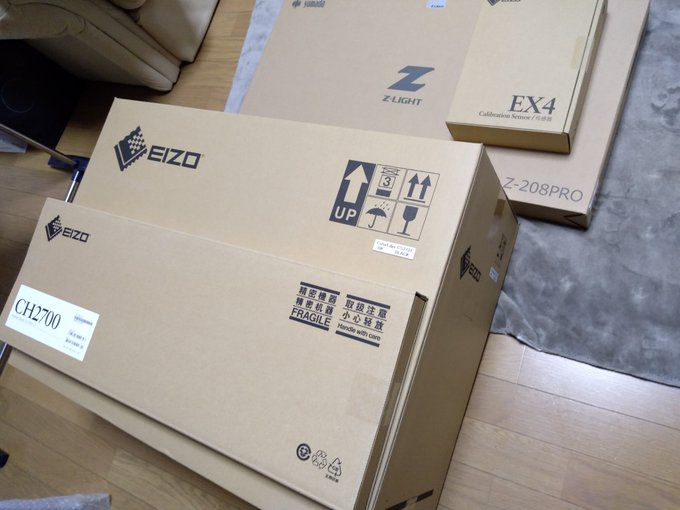</p>
<p>カラーマネジメントモニタ EIZO CS2731 です．せっかくなのでフード，ライト，キャリブレーションセンサも買っちゃいました．24インチか27インチで迷いましたがあまり変わらなさそうということでえいやと27インチに．文字も追うことを考えて解像度は 4K ではなく WQHD のモデルとしました．まだ届いたばかりですが，この広さのモニタをもつのは初めてで，革命的便利さを感じ取っています．これからガンガン使っていく予定です．</p>
<p>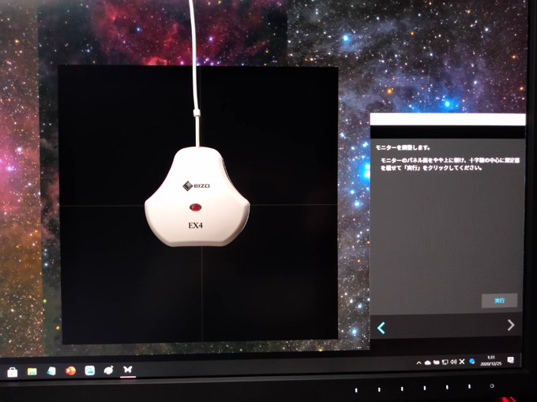<br>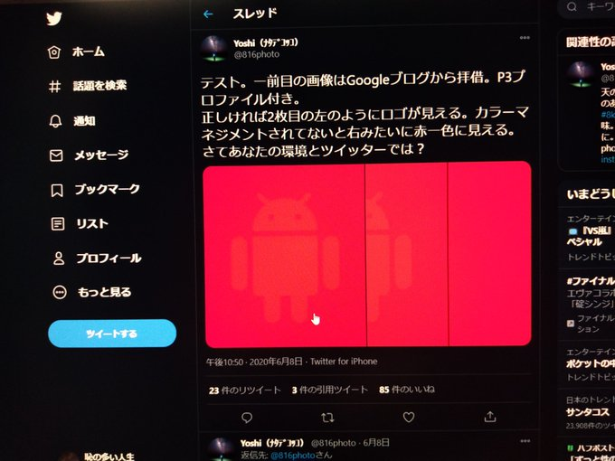</p>
<p>早速キャリブレーションしてみました，無事できているようで安心．プリンタを買って（まだ買ってないのかよ）色合わせして印刷してみるのが楽しみです．</p>
<p>本当はゲーミングチェアも買ったのですが，届くのは来月になりそうということでまた次回以降の記事でそれについては書こうと思います．</p>
<p>「天文機材は買わないの？」という声がどこかから聞こえてきそうですが，私は奨学金の面接で使いみちを問われた際，「自宅での研究環境を充実させるために使います」と言ってしまったので，こういう使い方になっています．趣味に使うことは我慢なのです．<br>え？「カラーマネジメントモニタは趣味に片足突っ込んでないか」だって？<br>うるさい．でも実際，これが一番いい使い方だと自負しております．</p>
<h3 id="遠征記とか"><a href="#遠征記とか" class="headerlink" title="遠征記とか"></a>遠征記とか</h3><p>12月には二回遠征に行きました．ふたご座流星群極大近辺の12-13日と，翌週19-20日です．両方とも朝霧アリーナでしたが，前者は曇っていてほとんど撮影はできず，作品になるものはナシ．</p>
<p>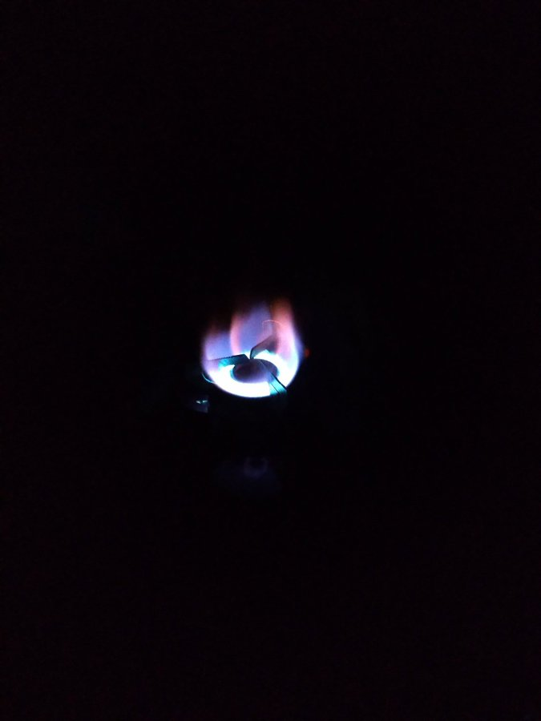<br>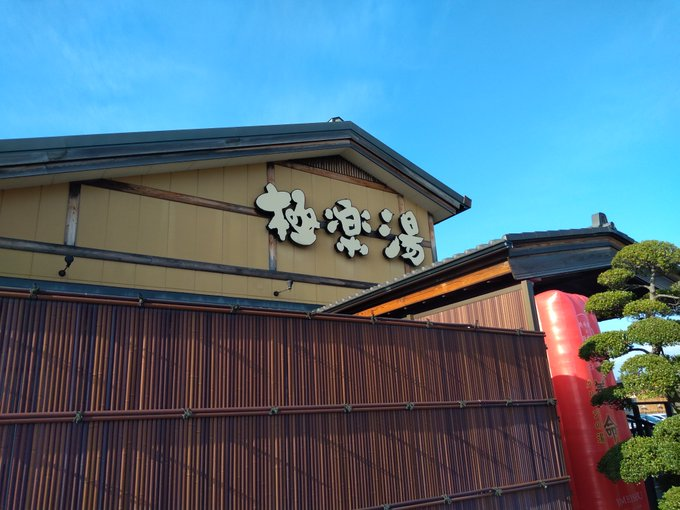<br>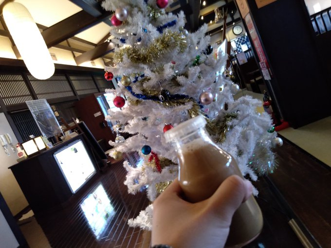<br>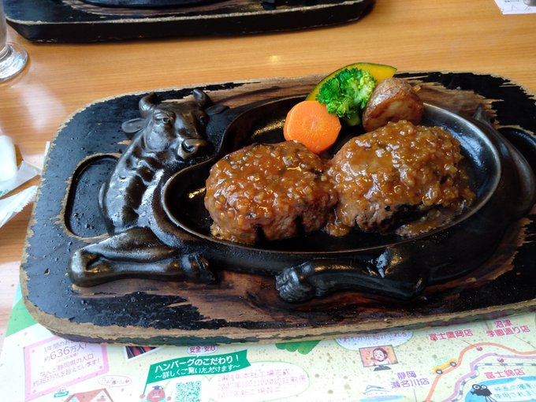</p>
<p>久々にさわやかも食べられたので良しとします．</p>
<p>後者は現地で <a href="http://morio.way-nifty.com/blog/" target="_blank" rel="noopener">M&amp;M さん</a>と初めて会い（Twitter 上での絡みは数年前からあったはずですがリアルで会うのはこれが初めてでした），天体撮影趣味や，M&amp;M さんと大変縁が深かった故<a href="https://blog.goo.ne.jp/nikutaberutoiiyo" target="_blank" rel="noopener">酒力 さん</a>についてなど（<a href="https://blog.goo.ne.jp/nikutaberutoiiyo/e/fd1700bb6777b87a553e935e1b4d8064" target="_blank" rel="noopener">私は彼が亡くなる数ヶ月前に天城高原でお会いしています</a>）色々な話をしつつ，忘れてきたカメラ雲台を借りたり熱エネルギーをいただいたりしました．ありがたや…．</p>
<p>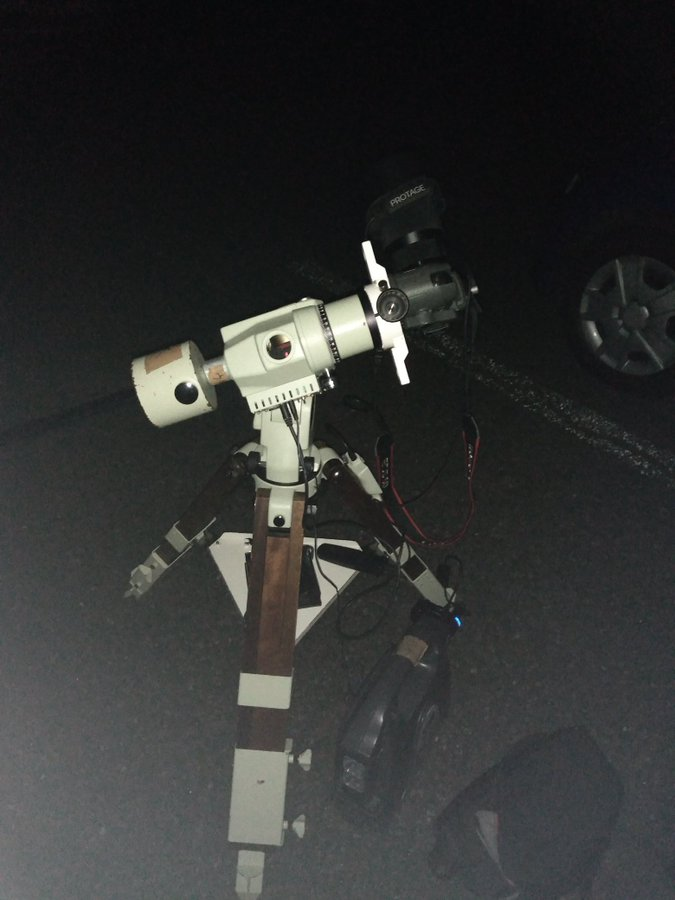借りた雲台での撮影…．</p>
<p>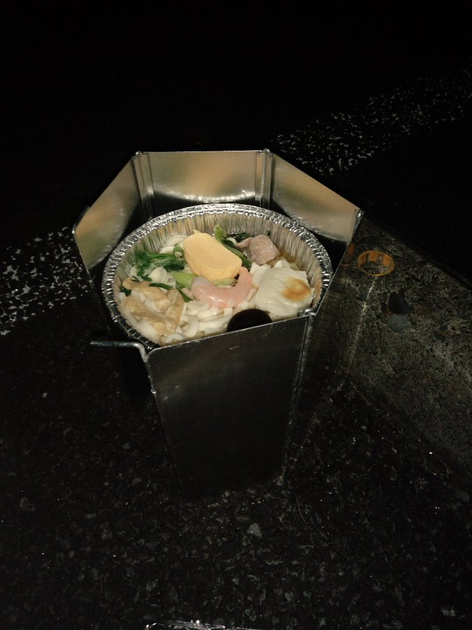熱エネルギーも，ありがたや…．</p>
<p>この日はとりあえず135mmで2対象を撮影しておきました．このレンズを使うのはほぼ1年ぶりで，いいレンズなのに稼働率が低くもったいないなという気持ち．．</p>
<p>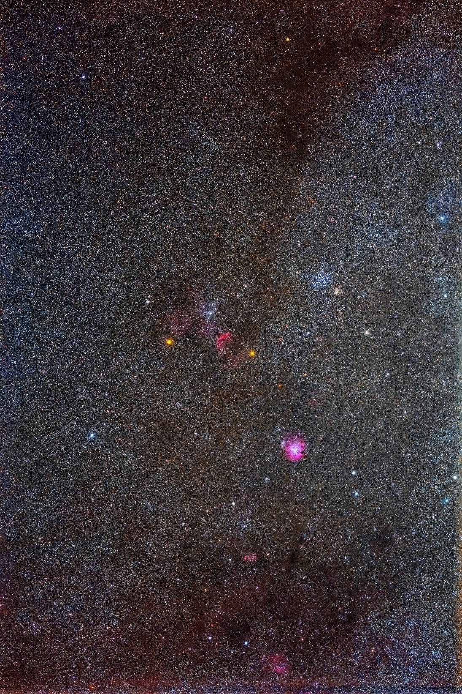</p>
<div style="text-align: center;">
「クラゲ星雲，モンキー星雲，M35周辺」<br>
2020年12月20日 2時26分～ 静岡県 朝霧アリーナ駐車場にて<br>
SIGMA 135mm F1.8 DG HSM Art<br>
Canon EOS 6D<br>
F3.5 / ISO 1250 / 180s * 50 = 150 min<br>
タカハシ EM-11 Temma2 Jr.<br>
ライトダーク: ライトと同条件 * 16<br>
フラット: なし（レンズプロファイル）<br>
RStacker / ステライメージ8 / Adobe Lightroom CC / Photoshop CC<br><br>
</div>

<p>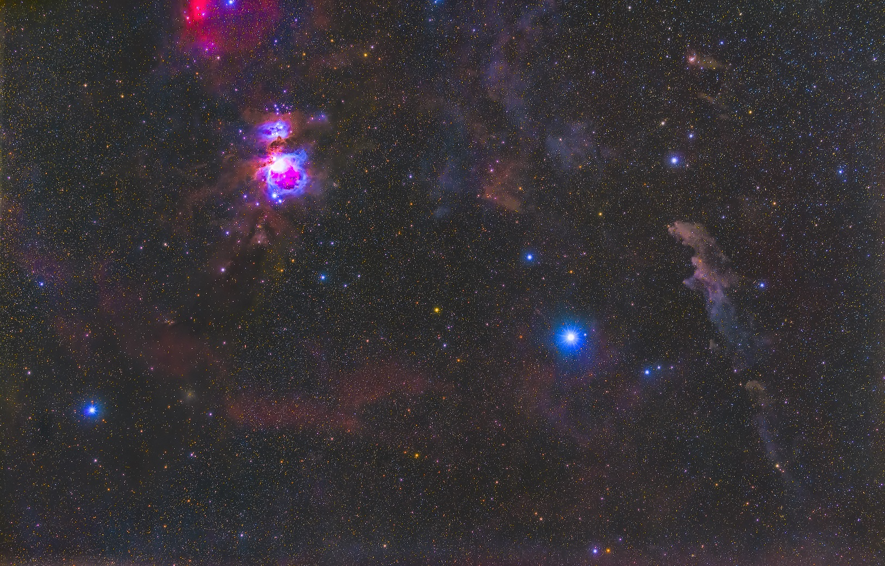</p>
<div style="text-align: center;">
「オリオン座南部」<br>
2020年12月19日 22時3分～ 静岡県 朝霧アリーナ駐車場にて<br>
SIGMA 135mm F1.8 DG HSM Art<br>
Canon EOS 6D<br>
F3.5 / ISO 1250 / 180s * 68 = 204 min<br>
タカハシ EM-11 Temma2 Jr.<br>
ライトダーク: ライトと同条件 * 16<br>
フラット: なし（レンズプロファイル）<br>
RStacker / ステライメージ8 / Adobe Lightroom CC / Photoshop CC<br><br>
</div>

<p>時系列がひっくり返っていますが，クラゲモンキーM35 は M&amp;M さんに教えていただいた領域です．クラゲの明るい部分は描写されてますが，北西側の淡い部分までは微妙ですね．通常のカメラだとこんなところでしょうか．オリオン座南部は地味に初めて撮影しましたが，<a href="https://reflexions.jp/tenref/orig/2020/11/23/12083/" target="_blank" rel="noopener">某プロジェクト</a>行きとなる予定です．魔女横がいい感じに出てくれたので嬉しい．</p>
<p>シーイングと寒さ以外は風も結露もなく，一晩快晴の素晴らしい夜だったと思います．<br>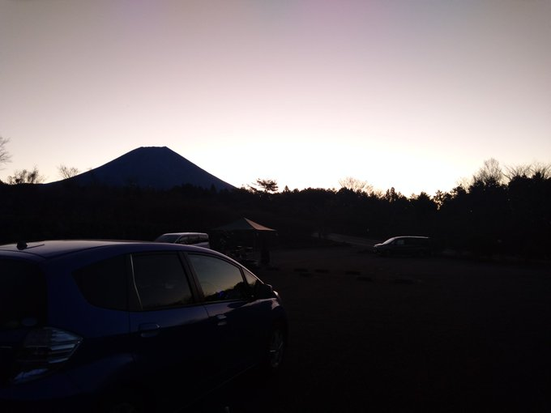爆睡していたらM&amp;Mさんは先に帰られていました．雲台を借りっぱなしだったので談合坂まで追いかけて返却しました．</p>
<p>そういえば，別に面白い写真も撮ってないのでこの記事には詳しく書きませんでしたが，21日周辺での連日の木星土星接近は，少しだけ眼視で見ることができ，ひじょうに感動しました．木星，衛星たちと，土星，タイタンが140倍程度で同一視野に収まっている光景は下手したら一生に一度の光景でしょう．目に焼き付けておきました．<br>次は年末に今年のまとめ的な記事を書きたいと思っています．それでは．</p>

		
	</div>
	<footer class="article-footer">
		<a href="https://twitter.com/intent/tweet?text=%E6%9C%80%E8%BF%91%E3%81%AE%E3%81%93%E3%81%A8%EF%BC%88%E9%81%A0%E5%BE%81%E3%81%A8%E3%81%8B%EF%BC%89｜%E3%81%BB%E3%81%97%E3%82%88%E3%81%BF%E5%A4%A7%E5%AD%A6%E7%94%9F%E3%81%AE%E3%83%96%E3%83%AD%E3%82%B0&url=http://dabokun.github.io/2020/12/24/00000044-2020-12-recent/" class="twitter-share-button" target="_blank" title="Twitter"></a>
		<script async src="https://platform.twitter.com/widgets.js" charset="utf-8"></script>

		<div id="fb-root"></div>
		<script async defer crossorigin="anonymous" src="https://connect.facebook.net/ja_JP/sdk.js#xfbml=1&version=v4.0"></script>
		<div class="fb-share-button" data-href="http://dabokun.github.io/2020/12/24/00000044-2020-12-recent/" data-layout="button_count" data-size="small"><a target="_blank" href="https://www.facebook.com/sharer/sharer.php?u=https%3A%2F%2Fdabokun.github.io%2F&amp;src=sdkpreparse" class="fb-xfbml-parse-ignore">シェア</a></div>
	</footer>
	<footer class="entry-footer">
		<div class="entry-meta-footer">
			<span class="category">
				
  <div class="article-category">
    <a class="article-category-link" href="/categories/others/">その他</a>
  </div>

			</span>
			<span class=" tags">
				
  <ul class="article-tag-list"><li class="article-tag-list-item"><a class="article-tag-list-link" href="/tags/others/">その他</a></li><li class="article-tag-list-item"><a class="article-tag-list-link" href="/tags/equipments/">機材</a></li><li class="article-tag-list-item"><a class="article-tag-list-link" href="/tags/mount/">赤道儀</a></li><li class="article-tag-list-item"><a class="article-tag-list-link" href="/tags/expedition/">遠征記</a></li></ul>

			</span>
		</div>
	</footer>
	
	
<nav id="article-nav">
  
    <a href="/2020/12/29/00000045-2020-goals/" id="article-nav-newer" class="article-nav-link-wrap">
      <strong class="article-nav-caption">Newer</strong>
      <div class="article-nav-title">
        
          2020年の目標を振り返る
        
      </div>
    </a>
  
  
    <a href="/2020/12/06/00000043-asimproc-2020-12/" id="article-nav-older" class="article-nav-link-wrap">
      <strong class="article-nav-caption">Older</strong>
      <div class="article-nav-title">
        
          天体画像処理研究会第一回オンラインミーティング
        
      </div>
    </a>
  
</nav>

	
</article>


<section id="comments">
	<div id="disqus_thread">
		<noscript>Please enable JavaScript to view the <a href="//disqus.com/?ref_noscript">comments powered by
				Disqus.</a></noscript>
	</div>
</section>

    </div>
    <div class="mb-search">
  <form action="//google.com/search" method="get" accept-charset="utf-8">
    <input type="search" name="q" results="0" placeholder="Search">
    <input type="hidden" name="q" value="site:dabokun.github.io">
  </form>
</div>
<footer id="footer">
	<h1 class="footer-blog-title">
		<a href="/">ほしよみ大学生のブログ</a>
	</h1>
	<span class="copyright">
		&copy; 2021 astr0dab0<br>
		Modify from <a href="http://sanographix.github.io/tumblr/apollo/" target="_blank">Apollo</a> theme, designed by <a href="http://www.sanographix.net/" target="_blank">SANOGRAPHIX.NET</a><br>
		Powered by <a href="http://hexo.io/" target="_blank">Hexo</a>
	</span>
</footer>
    
<script>
  var disqus_shortname = 'astr0dab0';
  
  var disqus_url = 'http://dabokun.github.io/2020/12/24/00000044-2020-12-recent/';
  
  (function(){
    var dsq = document.createElement('script');
    dsq.type = 'text/javascript';
    dsq.async = true;
    dsq.src = '//go.disqus.com/embed.js';
    (document.getElementsByTagName('head')[0] || document.getElementsByTagName('body')[0]).appendChild(dsq);
  })();
</script>


<script src="//ajax.googleapis.com/ajax/libs/jquery/2.0.3/jquery.min.js"></script>


<link rel="stylesheet" href="/fancybox/jquery.fancybox.css" media="screen" type="text/css">
<script src="/fancybox/jquery.fancybox.pack.js"></script>


<script src="/js/script.js"></script>
  </div>
</body>
</html>